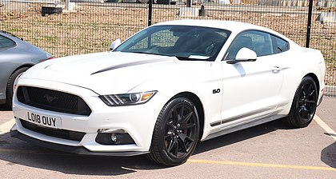
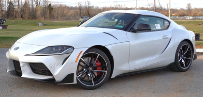
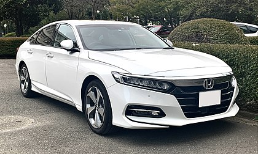

| IMAGE | DESCRIPTION | FEATURES |
|---|---|---|

| Bayerische Motoren Werke AG, abbreviated as BMW (German pronunciation: [ˌbeːʔɛmˈveː] (listen)), is a German multinational manufacturer of luxury vehicles and motorcycles headquartered in Munich, Bavaria. The corporation was founded in 1916 as a manufacturer of aircraft engines, which it produced from 1917 until 1918 and again from 1933 to 1945. Automobiles are marketed under the brands BMW, Mini and Rolls-Royce, and motorcycles are marketed under the brand BMW Motorrad. In 2017, BMW was the world's fourteenth-largest producer of motor vehicles, with 2,279,503 vehicles produced.[2] The company has significant motor-sport history, especially in touring cars, sports cars, and the Isle of Man TT. BMW is headquartered in Munich and produces motor vehicles in Germany, Brazil, China, India, Mexico, the Netherlands, South Africa, the United Kingdom, and the United States. The Quandt family is a long-term shareholder of the company (with the remaining shares owned by public float), following investments by the brothers Herbert and Harald Quandt in 1959 which saved the company from bankruptcy. |
|
|  | The Ford Mustang is a series of American automobiles manufactured by Ford. In continuous production since 1964, the Mustang is currently the longest-produced Ford car nameplate. Currently in its sixth generation, it is the fifth-best selling Ford car nameplate. The namesake of the "pony car" automobile segment, the Mustang was developed as a highly styled line of sporty coupes and convertibles derived from existing model lines, initially distinguished by "long hood, short deck" proportions.[3] Originally predicted to sell 100,000 vehicles yearly, the 1965 Mustang became the most successful vehicle launch since the 1927 Model A.[4] Introduced on April 17, 1964[5] (16 days after the Plymouth Barracuda), over 400,000 units in its first year; the one-millionth Mustang was sold within two years of its launch.[6] In August 2018, Ford produced the 10-millionth Mustang; matching the first 1965 Mustang, the vehicle was a 2019 Wimbledon White convertible with a V8 engine.[7] |
|
|  | The Toyota Supra (Japanese: トヨタ・スープラ, Hepburn: Toyota Sūpura) is a sports car and grand tourer manufactured by the Toyota Motor Corporation beginning in 1978. The name "supra" is derived from the Latin prefix, meaning "above", "to surpass" or "go beyond".[3] The initial four generations of the Supra were produced from 1978 to 2002. The fifth generation has been produced since March 2019 and went on sale in May 2019.[4] The styling of the original Supra was derived from the Toyota Celica, but it was both longer and wider.[5] Starting in mid-1986, the A70 Supra became a separate model from the Celica. In turn, Toyota also stopped using the prefix Celica and named the car Supra.[6] Owing to the similarity and past of the Celica's name, it is frequently mistaken for the Supra, and vice versa. The first, second and third generations of the Supra were assembled at the Tahara plant in Tahara, Aichi, while the fourth generation was assembled at the Motomachi plant in Toyota City. The 5th generation of the Supra is assembled alongside the G29 BMW Z4 in Graz, Austria by Magna Steyr. |
|
|  | The Honda Accord (Japanese: ホンダ・アコード, Hepburn: Honda Akōdo, /əˈkɔːrd/), also known as the Honda Inspire (Japanese: ホンダ・インスパイア, Hepburn: Honda Insupaia) in Japan and China for certain generations, is a series of cars manufactured by Honda since 1976, best known for its four-door sedan variant, which has been one of the best-selling cars in the United States since 1989. The Accord nameplate has been applied to a variety of vehicles worldwide, including coupes, station wagons, hatchbacks and a Honda Crosstour crossover. Since its initiation, Honda has offered several different car body styles and versions of the Accord, and often vehicles marketed under the Accord nameplate concurrently in different regions differ quite substantially. It debuted in 1976, as a compact hatchback, though this style only lasted through 1989, as the lineup was expanded to include a sedan, coupe, and wagon. |
|
| CLICK HERE TO WATCH SOME CAR VIDEOS |